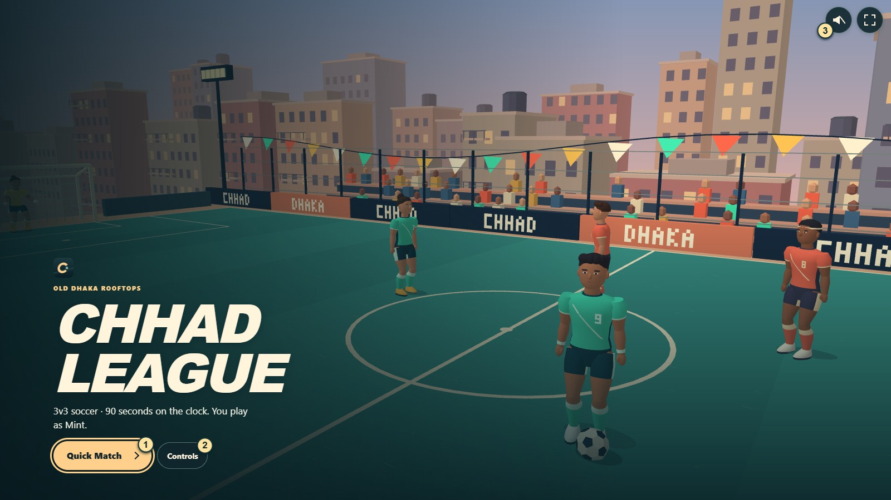
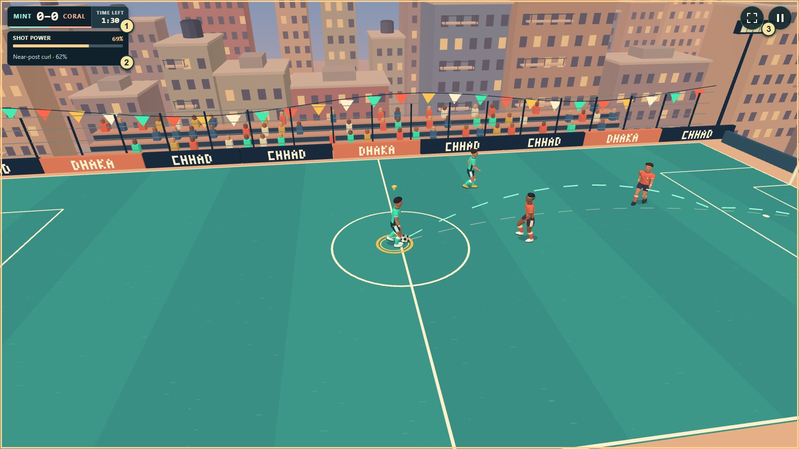
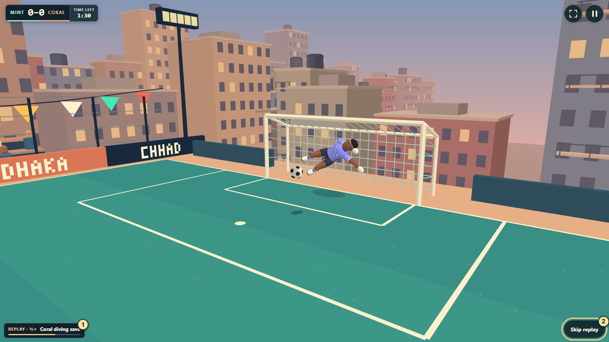
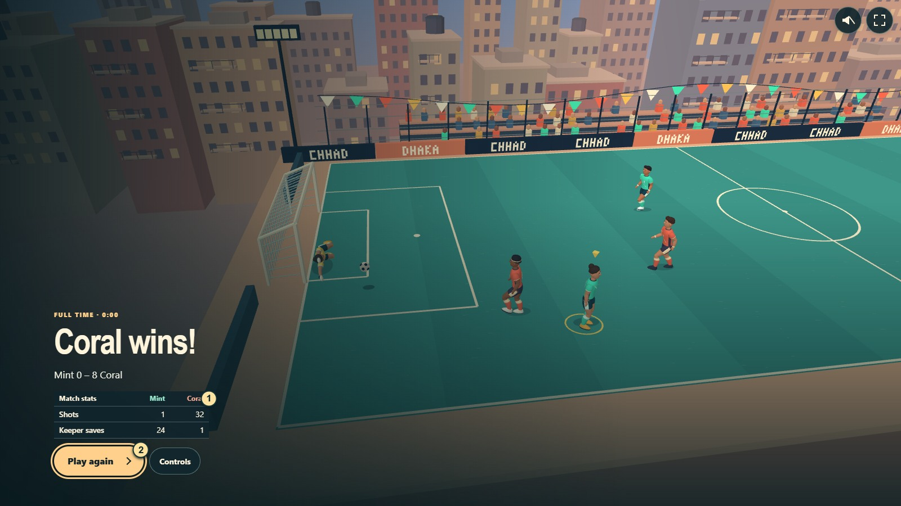
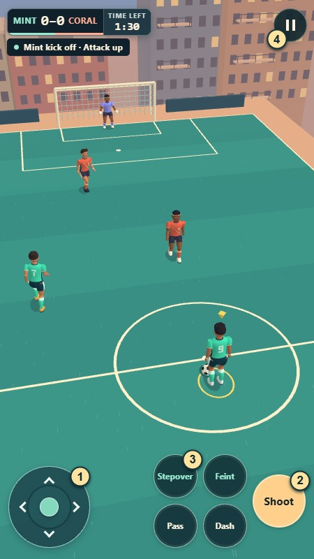
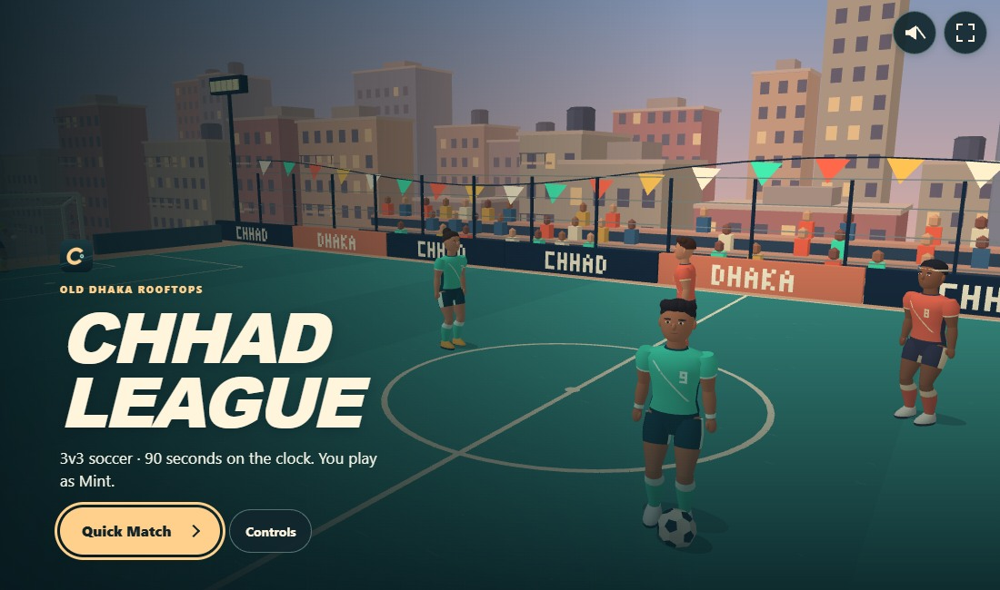
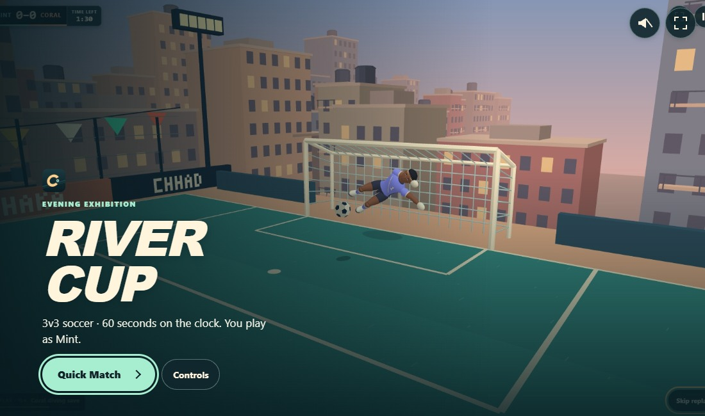

Game guide
Host the game, learn the controls and make the opening screen your own.
Open or host the game
- Extract the entire main ZIP. Open its
index.htmland choose Play game for a local desktop preview. - For phones, upload the contents of
game/to a folder on your HTTPS web host. Keepindex.html,config.js,game.webmanifest,scripts/,styles/andassets/together. - Open that folder's URL on your phone. Tap Play full screen if shown. Dismiss Android’s first-use fullscreen tip, then tap Quick Match. The match clock starts at kickoff.
For a local web server, open a terminal in game/ and run the command below with Python 3 installed. On that computer, open http://localhost:8000/.
python -m http.server 8000To embed the game, give the frame space, point it at your deployed game folder and allow fullscreen. Browsers that restrict fullscreen can still play inside the frame.
<iframe src="./game/" title="Chhad League"
style="width:100%;height:75vh;border:0"
allow="fullscreen" allowfullscreen></iframe>Play a match
You control Mint’s active outfield player. Each team fields two outfield players and a goalkeeper. Mint attacks right in landscape and up in portrait. Outscore Coral before the clock expires. Each goal or diving save can trigger a half-speed replay. Skip it to return to the match.




Phone and keyboard controls

| Action | Touch | Keyboard or mouse |
|---|---|---|
| Move | Drag the left joystick. Use the right thumb for actions. | WASD or arrow keys. |
| Shoot | Tap Shoot for a quick shot. Hold to charge and release to strike. | Tap or hold Space. |
| Curve | Hold Shoot and swipe left or right in portrait, or up or down in landscape. Release to kick. | Hold Space, use up/down to aim and Z/C to curl. A mouse can also hold and drag vertically on the field. |
| Pass or switch | Tap Pass in possession or Switch while defending. | F, X or Enter. |
| Beat a defender | Tap Stepover or Feint while dribbling. Approach a nearby defender and steer toward open space. | Q for stepover. E for body feint. |
| Dash or tackle | Tap Dash. Off the ball the Shoot button changes to Tackle. Its cooldown bar shows when a new burst is available. | Shift to dash. Space to tackle while defending. |
| Pause or skip | Tap Pause to stop the clock. Use Skip replay to return to play. | Esc to pause or resume. Enter to skip a replay. |
Change the branding
Open game/config.js in a text editor. Change the values inside the quotation marks, save, then reload the page. The original court is drawn in code. The optional backdrop applies to the opening menu.
window.ChhadLeagueConfig = {
title: "River Cup",
courtLabel: "Evening exhibition",
matchSeconds: 60,
accentColor: "#a7eed0",
menuLogo: "assets/icons/icon-192.png",
menuBackdrop: "assets/branding/court.jpg"
};

- Menu logo. Place your PNG in
assets/, then setmenuLogoto its path. An empty string hides the mark. A missing image leaves the title visible. - Menu backdrop. Create
assets/branding/, copy in your landscape JPG and setmenuBackdropas shown. An empty or missing backdrop displays the rendered court. Use an image you have rights to distribute. - Home-screen icons. Replace
assets/icons/icon-192.pngandicon-512.pngwith square PNGs of the same names and sizes. Keep the design inside the central safe area. - App title. Set
titlefor the menu and browser tab. Editnameandshort_nameingame.webmanifestfor a home-screen installation. Update the static page title and description inindex.htmlfor link previews. - Clock and color. Use a whole number from 30 to 300 for
matchSecondsand a six-digit hex color foraccentColor. The default clock is 90 seconds.
Edit the source
game/ is ready to host. source/ is the equivalent readable source with a copy script. You can run source/index.html directly. To ship source edits, open a terminal inside source/ and run node build.mjs with Node.js 18 or newer. The script copies into the sibling game/ folder. Keep your own changes in source/ if you use this workflow.
| File | What to edit |
|---|---|
config.js | Menu branding and match duration. |
styles/arena.css | HUD, buttons, typography, safe areas and portrait layouts. |
scripts/match.js | Match rules, input and AI. kickFlight controls the launch and fly advances the ball. poseKeeper places the keeper rig before collision checks. |
scripts/stadium.js | Stadium geometry, player kits, skinning, shadows and cameras. makeKit creates the player meshes. WebGL and the Canvas 2D fallback share the scene. |
scripts/branding.js | Configuration validation and loading menu images. |
The models, balls and stadium are procedural geometry. Sound effects use the browser's Web Audio oscillator. Display fonts use the device's installed fonts. The runtime consists of static HTML, CSS, JavaScript, a web app manifest and two PNG icons.
Frequently asked questions
Where do I change the game title or icon?
Use the branding guide. If an installed icon still shows the previous art, remove its shortcut and add it again after refreshing the hosted game.
How do I share a playable link?
Upload the contents of game/ to a static HTTPS host and share the folder URL. A link starting with file: points only to a file on your own computer.
Which way do I attack when I rotate my phone?
Mint attacks up in portrait and right in landscape. Lift both thumbs after rotating, then use the joystick again. If the address bar stays visible inside another site, open the game URL directly.
Does the game need accounts or advertising to run?
The match runs locally in the browser. The package contains no advertising SDK, analytics, purchases or online multiplayer. AdSense and AdMob are separate Google services. Adding them would require your own accounts and acceptance of their terms, possible costs and revenue sharing.
Can I promise offline play after installing the icon?
The manifest provides an app name, icons and fullscreen launch. The web release loads from its host. An offline-first service worker would be an additional integration.
How can I report a problem?
Support is provided in English. Include the game version, browser version, device, orientation and the actions that reproduce the issue. Use the support channel supplied with your copy.